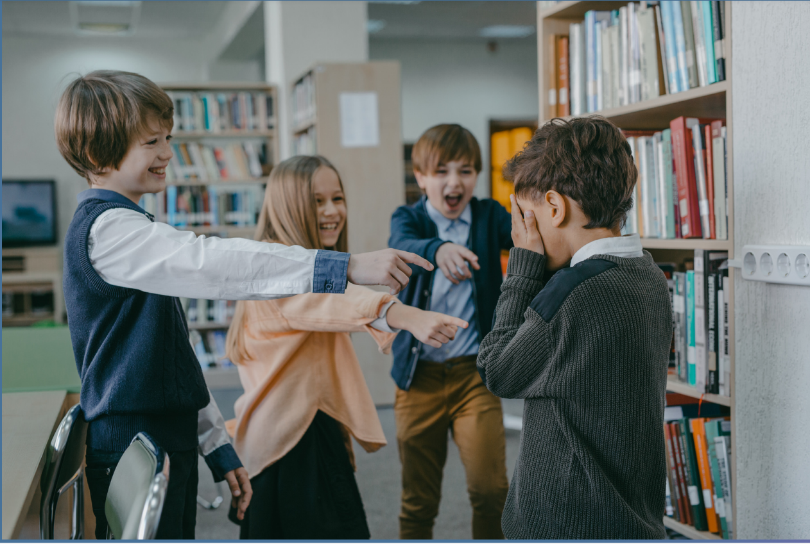

|

Kesehatan mental remaja yang dibuat oleh siswa SMA NEGERI 1 SLAWI: |
Melukis Harapan: Kisah Maya dalam Menghentikan Perundungan Di sebuah sekolah, ada seorang siswa bernama Maya yang selalu menjadi sasaran perundungan oleh sekelompok teman sekelasnya. Maya memiliki hobi menggambar, dan dia sering menghabiskan waktu sendirian di perpustakaan sekolah. Suatu hari, Maya memutuskan untuk membuat kampanye anti- perundungan dengan bantuan beberapa teman baiknya. Maya dan teman-temannya membuat poster dan brosur yang berbicara tentang bahaya perundungan dan mengajak siswa lain untuk bergabung dalam menghentikan perundungan. Mereka juga mengadakan pertemuan kecil di perpustakaan untuk berbicara tentang pengalaman mereka dan mengedukasi tentang dampak negatif dari perundungan. Kampanye mereka mulai menyebar di sekolah. Banyak siswa mulai mendukung gerakan ini dengan mengenakan pin anti-perundungan yang dirancang oleh Maya. Beberapa guru juga mendukung dan membantu menyebarkan pesan melalui pelajaran dan kegiatan sekolah. TIDAK LAMA KEMUDIAN, PERUBAHAN POSITIF MULAI TERLIHAT. SISWA-SISWA YANG SEBELUMNYA TERLIBAT DALAM PERUNDUNGAN MULAI MENYADARI DAMPAK BURUKNYA DAN MEMINTA MAAF KEPADA KORBAN. MAYA DAN TEMAN-TEMANNYA JUGA MEMBENTUK KELOMPOK "SAHABAT TANPA PERUNDUNGAN" DI MANA MEREKA MENYEDIAKAN TEMPAT AMAN BAGI SISWA YANG MERASA TERTEKAN OLEH PERUNDUNGAN. SEIRING BERJALANNYA WAKTU, SEKOLAH TERSEBUT MENJADI LEBIH INKLUSIF DAN RAMAH. MAYA TIDAK HANYA BERHASIL MENGHENTIKAN PERUNDUNGAN TERHADAP DIRINYA SENDIRI, TETAPI JUGA TELAH MEMBANTU MENGUBAH LINGKUNGAN SEKOLAH MENJADI TEMPAT YANG LEBIH AMAN DAN MENDUKUNG BAGI SEMUA SISWA. KISAHNYA MENGINSPIRASI BANYAK ORANG UNTUK BERDIRI MELAWAN PERUNDUNGAN DAN MEMBUKTIKAN BAHWA SATU ORANG BISA MEMBUAT PERBEDAAN BESAR. |
|---|